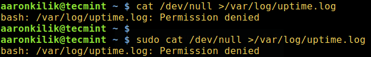
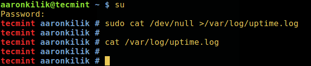
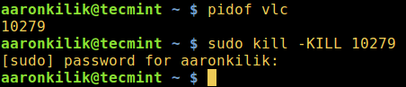
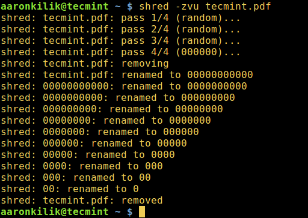
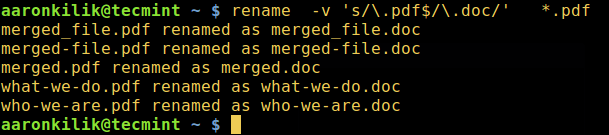
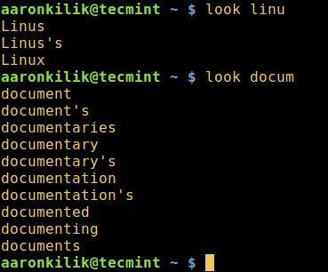
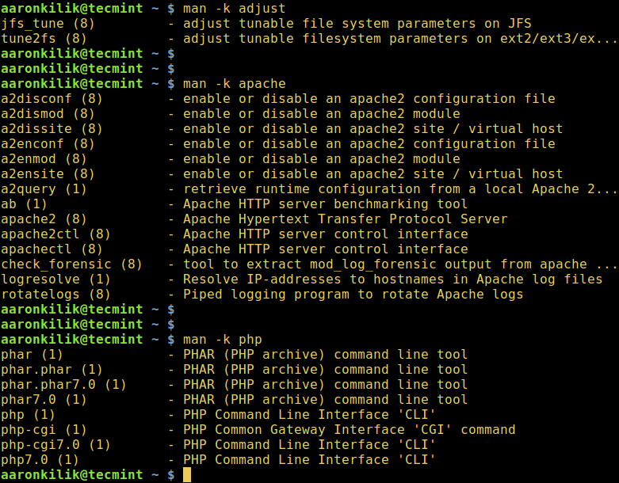

编译自：http://www.tecmint.com/linux-command-line-tricks-and-tips-worth-knowing/
作者： Aaron Kili
原创：LCTT https://linux.cn/article-8119-1.html
译者： zhb127
我非常喜欢使用命令，因为它们比 GUI（图形用户界面）应用程序对 Linux 系统提供更多的控制，因此，我一直在寻找一些有趣的方法让 Linux 的操作变得简单好玩[1]，主要是基于终端操作。
当我们发现使用 Linux 的新技巧时，尤其是像我这样的命令行极客，我们总会感到非常来劲。
建议阅读： 5 有趣的 Linux 命令行技巧 - 第一部分[2]
而且我们也会很想与数百万 Linux 用户分享新学到的实践或命令，特别是那些还在使用自己的方式操作这个令人兴奋的操作系统的新手们。
建议阅读： 10 个对新手有用的 Linux 命令行技巧 - 第二部分[3]
在这篇文章中，我们将回顾一系列有用的命令行小技巧[4]，它们可以显著地提高你的 Linux 使用技能。
锁定文件或目录最简单的方法是使用 Linux 文件权限。如果你是文件或目录的所有者，你可以阻止其他用户和组访问（删除、读取、写入、执行）它，如下所示：
$ chmod 700 tecmint.info
或
$ chmod go-rwx tecmint.info
想要了解更多有关 Linux 文件权限的内容，请阅读这篇文章在 Linux 中管理用户和组，文件权限和属性[5]。
为了实现对系统中的其他用户隐藏文件或目录，可以通过在文件或目录开头添加 . 的方式重命名：
$ mv filename .tecmint.info
默认情况下，当你运行 ls 命令[6]之后，它会使用 rwx 格式显示文件权限，为了了解 rwx 格式和八进制格式的等同性，你可以学习如何在 Linux 中将 rwx 权限转为八进制格式[7]。
sudo 命令执行失败时怎么使用 su 命令虽然 sudo 命令[8]被用来以超级用户权限执行命令，但是在某些情况下它也会执行失败，如下所示。
在这里，我想清空一个大文件的内容[9]，其文件名为 uptime.log，但是即便我是使用 sudo 命令也执行失败了。
$ cat /dev/null >/var/log/uptime.log
$ sudo cat /dev/null >/var/log/uptime.log

在 Linux 中清空大文件的内容
遇到这种情况，你需要使用 su 命令切换到 root 用户，然后像下面这样去执行清空操作：
$ su
$ sudo cat /dev/null >/var/log/uptime.log
$ cat /var/log/uptime.log

切换到超级用户
尝试理解 su 和 sudo 之间的区别[10]，另外，通过阅读它们的手册页以了解更多的使用指南：
$ man sudo
$ man su
有些时候，当你想使用 kill、killall、pkill 命令结束一个进程[11]时，它们有可能无法生效，你可能会看到该进程仍然还在系统上运行。
如果要强制结束一个进程，可以发送 -KILL 信号给该进程。
首先获取指定进程 ID[12]，然后像下面这样结束该进程：
$ pidof vlc
$ sudo kill -KILL 10279

在 Linux 中查找和结束进程
查看 kill 命令[13]以获取更多的使用选项和信息。
一般情况下，我们通过使用 rm 命令将文件从 Linux 系统中删除。然而，这些文件并没有被真正的删除，它们仍被存储在那里并隐藏在你的硬盘中，其他用户仍然可以在 Linux 中恢复删除的文件[14]并查看。
为了防止这种情况发生，我们可以使用 shred 命令来覆写文件内容，并在覆盖完成后选择删除文件。
$ shred -zvu tecmint.pdf
上述命令中所使用的选项说明：
-z – 最后一次使用 0 进行覆盖以隐藏覆写动作。-u – 覆写后截断并移除文件。-v – 显示详细过程。
在 Linux 中永久删除文件
阅读 shred 手册以获取更多的使用信息。
$ man shred
你可以通过使用 rename 命令随时在 Linux 中重命名多个文件[15]。
rename 命令会根据第一个参数中的规则重命名指定文件。
以下命令会将所有 .pdf 文件重命名为 .doc 文件，使用的规则为 's/\.pdf$/\.doc/'：
$ rename -v 's/\.pdf$/\.doc/' *.pdf

在 Linux 中重命名多个文件
在接下来的例子中，我们将通过重命名所有匹配 "*.bak" 的文件来移除其拓展名，使用的规则是 's/\e.bak$//'：
$ rename -v 's/\e.bak$//' *.bak
look 命令用于显示文件中以指定字符串为前缀的任意行，同时它也可以帮你检查命令行中给定单词的拼写。尽管它并不是那么有效和可靠，但它仍然算得上是其他强大的拼写检查工具的有用替代品。
$ look linu
$ look docum

在 Linux 中检查单词拼写
man 命令用于显示命令的手册页，当使用 -k 选项时，它会将关键字 printf（或者如下命令中的关键字 adjust、apache、php ）作为正则表达式，来搜索所有匹配该名称手册页，并显示其简介。
$ man -k adjust
$ man -k apache
$ man -k php

按关键字搜索手册页
watch 命令可以定期执行另一个 Linux 命令[16]并全屏显示该命令的执行结果。当 watch 命令与 tail 命令[17]（用于查看文件结尾的 Linux 命令）配合使用时，可以监测到日志文件的日志记录情况。
在以下示例中，你将实时监测系统认证日志文件。打开两个终端窗口，在第一个窗口中实时监测该日志文件，如下：
$ sudo watch tail /var/log/auth.log
你也可以使用 tail 命令[18]（显示文件结尾的 Linux 命令）的 -f 选项实时监测文件变化。这样，我们就可以在日志文件中看到日志的生成情况。
$ sudo tail -f /var/log/auth.log
接着，在第二个终端窗口中运行以下命令，之后，你就可以在第一个终端窗口中观察日志文件内容：
$ sudo mkdir -p /etc/test
$ sudo rm -rf /etc/test
shell 内置命令是一个命令或者函数，从内部调用并直接在 shell 里执行，而不是从硬盘加载外部的可执行程序来执行。
列出所有 shell 内置命令及其语法，执行如下命令：
$ help
作为结束语，命令行小技巧[19]不仅能派得上用场，而且让学习和使用 Linux 变得更加简单有趣，尤其是对新手来讲。
你也可以通过留言给我们分享其他在 Linux 中有用有趣的命令行小技巧[20]。
作者简介：
Aaron Kili 是一名 Linux 和 F.O.S.S 的爱好者，未来的 Linux 系统管理员、网站开发人员，目前是 TecMint 的写作者，他喜欢用电脑工作，并且乐于分享知识。
via: http://www.tecmint.com/linux-command-line-tricks-and-tips-worth-knowing/
作者：Aaron Kili[21] 译者：zhb127[22] 校对：wxy[23]
本文由 LCTT[24] 原创编译，Linux中国[25] 荣誉推出
[1]: https://linux.cn/article-5816-1.html
[2]: https://linux.cn/article-5485-1.html
[3]: https://linux.cn/article-6314-1.html
[4]: https://linux.cn/article-6314-1.html
[5]: https://linux.cn/article-7418-1.html
[6]: https://linux.cn/article-5531-1.html
[7]: https://linux.cn/article-4067-1.html
[8]: https://linux.cn/article-7418-1.html
[9]: https://linux.cn/article-8024-1.html
[10]: http://www.tecmint.com/su-vs-sudo-and-how-to-configure-sudo-in-linux/
[11]: https://linux.cn/article-5557-1.html
[12]: https://linux.cn/article-5051-1.html
[13]: https://linux.cn/article-2116-1.html
[14]: https://linux.cn/article-7974-1.html
[15]: https://linux.cn/article-4905-1.html
[16]: https://linux.cn/article-5765-1.html
[17]: http://www.tecmint.com/view-contents-of-file-in-linux/
[18]: http://www.tecmint.com/view-contents-of-file-in-linux/
[19]: http://www.tecmint.com/tag/linux-tricks/
[20]: https://linux.cn/article-5485-1.html
[21]: http://www.tecmint.com/author/aaronkili/
[22]: https://github.com/zhb127
[23]: https://github.com/wxy
[24]: https://github.com/LCTT/TranslateProject
[25]: https://linux.cn/article-8119-1.html?utm_source=rss&utm_medium=rss